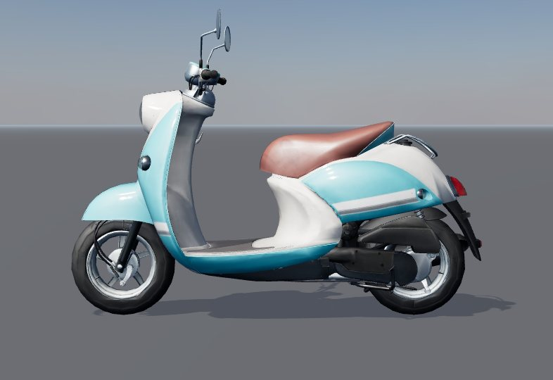
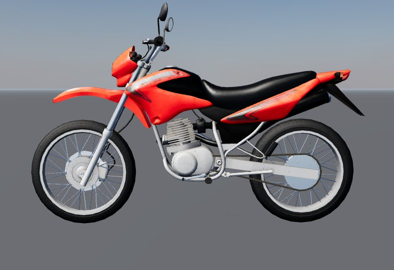

Each bike below is the exact file the game will load, drawn with the game's own settings in plain daylight. Rider, helmet and weapons come in later rounds.
Reply in the chat: "approved", or the IDs that need work and what is wrong. Tap a small picture to enlarge it. "Spin it here" loads the real file on your phone and lets you turn the bike with your finger.
A1
Level 1: Scooter
The weakest bike; the player starts on it.
to review

Side
Triangles
29,999 of 30,000
File
0.94 MB of 1.5
Parts drawn
10 5 materials
What was done
Removed a Japanese beginner-driver sticker.
Cut from 95,583 to 29,999 triangles; wheels are separate parts so they can spin.
Textures shrunk from 4096 px to 1024 px.
Note. No maker lettering was on this model.
Model: Vino by minghauLoh, CC BY 4.0, changed as listed.
A2
Level 2: 125 cc commuter
Side stand up when ridden.
to review

Side
Triangles
30,000 of 30,000
File
1.30 MB of 1.5
Parts drawn
28 16 materials
What was done
Removed the "BROS" lettering from both tank panels and the embossed "HONDA" on the engine cover.
Cut from 43,769 to 30,000 triangles, keeping the spoked wheels whole.
No side stand is modelled, so it is up.
Note. Needs your call: this is a trail-style bike, not a plain commuter, and the source does not give its engine size. The only plainer 125 I found (a red Honda CG-style bike) had a smeared, blocky texture and flat grey wheel discs, so I dropped it.
Removed "SUZUKI" on both lower fairings and the front, the "GSX-R" decals, the "S" emblems (fairing, tank, handlebar clamp), the label on the number plate and a game logo that was printed on it.
Wheels are separate parts. Already under budget.
Note. The source is a 750, and the plan says 600 cc. Nothing in the game will state an engine size unless you want it to. Tiny tyre-maker text on the tyre sidewalls is still there.